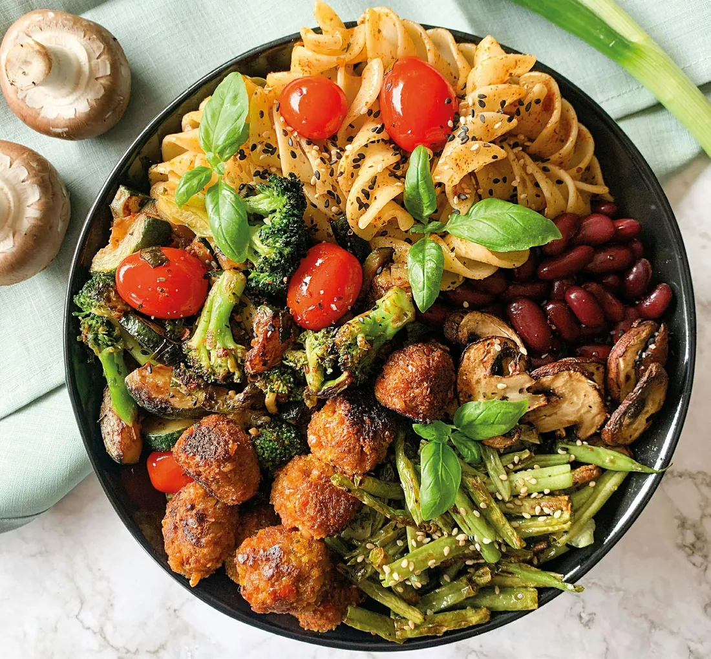
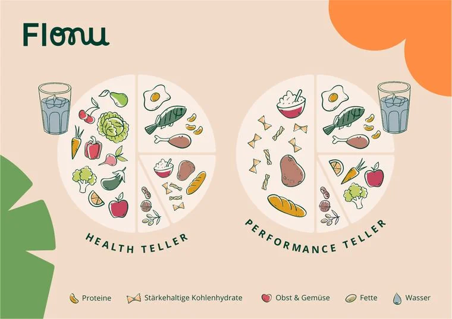
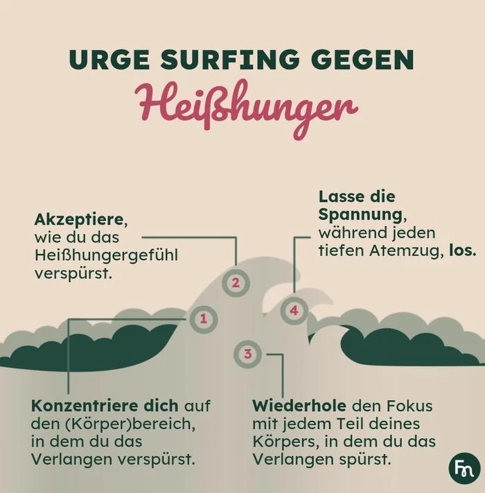
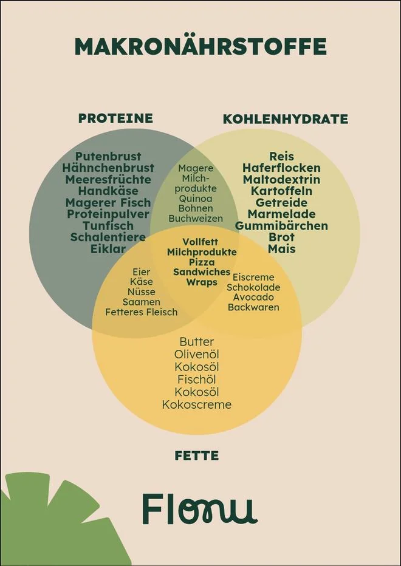
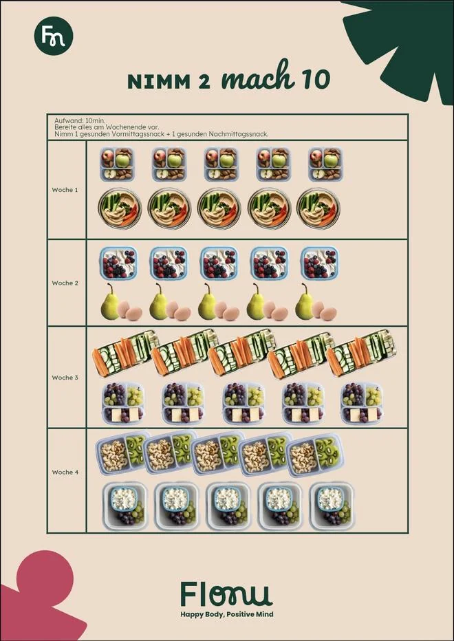
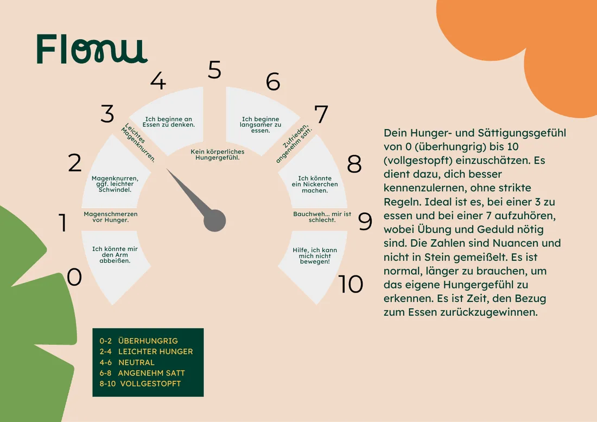
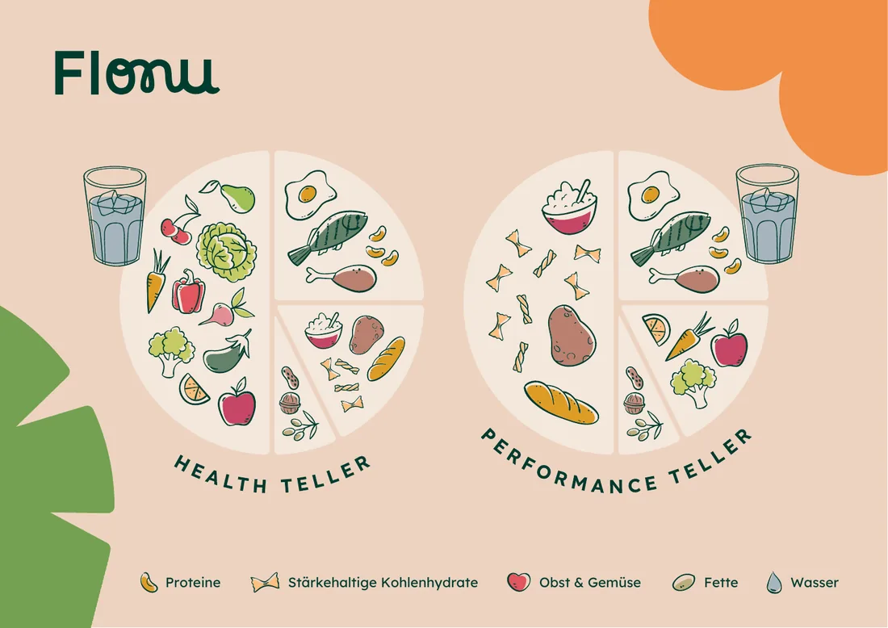

Kostenlose RessourcenFree resources
Tools & Wissen.Tools & knowledge.
Hungerbarometer, Tellermethode, Rechner und evidenzbasiertes Wissen. Kostenlos, ohne Opt-in. Weil Information kein Luxusgut ist.Hunger scale, plate method, calculators and evidence-based knowledge. Free, no opt-in. Because information should not be a luxury.

Hunger- und SättigungsbarometerHunger and fullness scale
Bei 3 anfangen, bei 7 aufhören.Start at 3, stop at 7.
Das Barometer ordnet dein Hunger- und Sättigungsgefühl von 0 bis 10 ein. Es geht um Nuancen. Strikte Regeln gibt es hier keine. Tipp auf eine Zahl.The scale rates your hunger and fullness from 0 to 10. It is about nuance. There are no strict rules. Tap a number.
Die TellermethodeThe plate method
Zwei Teller. Null Tracking.Two plates. Zero tracking.
Du musst nichts wiegen und nichts tracken. Du baust den Teller auf, und der Rest ergibt sich. Es gibt zwei Varianten, je nachdem, was der Tag von dir verlangt.Nothing to weigh, nothing to track. You build the plate and the rest follows. There are two versions, depending on what the day asks of you.
Health Teller
- ½ Obst und Gemüse½ fruit and vegetables
- ¼ Protein¼ protein
- ¼ stärkehaltige Kohlenhydrate¼ starchy carbs
Dazu Fette und Wasser. Für normale Tage.Plus fats and water. For normal days.
Performance Teller
- ½ stärkehaltige Kohlenhydrate½ starchy carbs
- ¼ Protein¼ protein
- ¼ Obst und Gemüse¼ fruit and vegetables
Dazu Fette und Wasser. Für Trainingstage und lange Schichten.Plus fats and water. For training days and long shifts.
Beide Teller enthalten immer alle drei Makronährstoffe.Both plates always contain all three macronutrients. Kohlenhydrate werden nicht gestrichen. Sie halten dich satt und leistungsfähig.Carbs stay on the plate. They keep you full and able to perform.

Dein Tool gegen emotionales EssenYour tool for emotional eating
Iss, bevor der Hunger zur Emotion wird.Eat before hunger turns into emotion.
Die meisten emotionalen Essepisoden entstehen, weil zu lange gewartet wurde. Großer Hunger plus ein stressiger Moment, und die Entscheidung trifft dein Körper.Most emotional eating episodes happen because you waited too long. Big hunger plus a stressful moment, and your body makes the call.
Eine Emotion dauert ca. 90 Sekunden. Sie ist eine chemische Reaktion, die von selbst abklingt. Großer Hunger macht dich anfälliger, sie mit Essen zu überdecken. Präventives Essen nimmt dem Hunger die Macht über deine Entscheidungen.An emotion lasts about 90 seconds. It is a chemical reaction that fades on its own. Big hunger makes you more likely to cover it with food. Preventive eating takes that power away from hunger.
Du musst nicht weniger essen. Du musst lernen, dich rechtzeitig zu versorgen.You do not need to eat less. You need to learn to feed yourself in time.
So setzt du es umHow to put it into practice
01Frühstücke an langen TagenEat breakfast on long days
Auch wenn du es nicht gewohnt bist. Gerade vor Tagen ohne Pause. Aus Strategie statt aus Hunger. Ein Powershake reicht völlig.Even if you are not used to it. Especially before days without a break. Out of strategy rather than hunger. A power shake is enough.
02Iss bei einer 3, stopp bei einer 7Eat at a 3, stop at a 7
Nutze das Hungerbarometer. Fang an, wenn du leicht hungrig bist, und nicht erst, wenn du „hangry“ bist. Das braucht Übung. Sei geduldig.Use the hunger scale. Start when you are slightly hungry, before you get “hangry”. It takes practice. Be patient.
03Plane 2 bis 3 Mahlzeiten und 2 SnacksPlan 2 to 3 meals and 2 snacks
Eine Struktur, die zu deinem Alltag passt. Kein Tracking-Stress. Regelmäßigkeit schlägt Perfektion.A structure that fits your day. No tracking stress. Regularity beats perfection.
04Bau jede Mahlzeit komplettBuild every meal complete
Protein, Kohlenhydrate (auch stärkehaltige!) und Fette. Eine Genusskomponente bewusst dazu, ohne schlechtes Gewissen.Protein, carbs (starchy ones too!) and fats. Add something you enjoy on purpose, without guilt.
Mini-ToolMini tool
Schnell-Check für deinen TagQuick check for your day
Tipp an, was heute schon stimmt.Tap what is already true today.
Das ist dein nächster Schritt:This is your next step:
- 01Frühstücke an langen TagenEat breakfast on long days
- 02Iss bei einer 3, stopp bei einer 7Eat at a 3, stop at a 7
- 03Plane 2 bis 3 Mahlzeiten und 2 SnacksPlan 2 to 3 meals and 2 snacks
- 04Bau jede Mahlzeit komplettBuild every meal complete
Alle vier. Dein Tag ist versorgt.All four. Your day is covered.
Power Shake
Der Power Shake in 6 Schritten.The power shake in 6 steps.
Gut, wenn du es eilig hast oder keinen Hunger hast, aber weißt, dass du etwas essen solltest, wenn du später nicht „hangry“ werden willst. Ideal für unterwegs, als Zwischenmahlzeit oder Frühstück.Good when you are in a hurry or not hungry, but you know you should eat something if you do not want to get “hangry” later. Ideal on the go, as a snack or for breakfast.
- 1MilchbasisMilk baseMilch oder Hafermilchmilk or oat milk
- 2Protein30 bis 35 g30 to 35 g
- 3GemüseVegetablesSpinat, Grünkohlspinach, kale
- 4ObstFruitBeeren, Bananeberries, banana
- 5FetteFatsNussbutter, Avocadonut butter, avocado
- 6HaferflockenOatsOptionaloptional
EvidenzbasiertEvidence-based
Wissen, das du direkt nutzen kannst.Knowledge you can use right away.
EssverhaltenEating behaviourWarum Diäten nicht funktionierenWhy diets don’t work
Diäten funktionieren kurzfristig. Das ist das Problem. Sie trainieren uns darauf, äußeren Regeln zu folgen statt inneren Signalen. Wir verlieren das Gespür für Hunger, Sättigung und das, was der Körper braucht. Sobald die Diät endet, endet auch das Verhalten.Diets work short-term. That is the problem. They train us to follow external rules instead of internal signals. We lose our sense of hunger, fullness and what the body needs. When the diet ends, the behaviour ends with it.
EssverhaltenEating behaviourEmotionales EssenEmotional eating
Emotionales Essen ist eine erlernte Strategie, die irgendwann funktioniert hat. Essen beruhigt, tröstet, belohnt. Das ist Biologie. Schwierig wird es, wenn Essen die einzige Strategie ist, die du hast.Emotional eating is a learned strategy that worked at some point. Food soothes, comforts, rewards. That is biology. It gets difficult when food is the only strategy you have.
EssverhaltenEating behaviourUrge Surfing gegen HeißhungerUrge surfing for cravings
Heißhunger ist eine Welle. Er baut sich auf, erreicht einen Höhepunkt und flacht wieder ab. Du kämpfst nicht dagegen. Du beobachtest. Wenn du das einmal erlebt hast, ohne nachzugeben, verändert sich etwas.A craving is a wave. It builds, peaks and flattens out again. You do not fight it. You watch it. Once you have ridden one out without giving in, something shifts.
- Konzentriere dich.Focus. Richte deine Aufmerksamkeit auf die Stelle im Körper, an der du das Verlangen spürst. Bauch? Brust? Kehle?Bring your attention to the place in your body where you feel the urge. Stomach? Chest? Throat?
- Akzeptiere.Accept. Nimm wahr, wie du das Heißhungergefühl spürst. Nicht wegdrücken, nicht bewerten. Es ist ein Gefühl, und Gefühle gehen vorbei.Notice how the craving feels. Don’t push it away, don’t judge it. It is a feeling, and feelings pass.
- Wiederhole.Repeat. Geh mit dem Fokus durch jeden Teil des Körpers, in dem du das Verlangen spürst. Beobachte, wie es sich verändert.Move your focus through every part of your body where you feel the urge. Watch how it changes.
- Lass los.Let go. Lass die Spannung mit jedem tiefen Atemzug los. Die Welle flacht von allein ab, wenn du sie lässt.Release the tension with every deep breath. The wave flattens on its own if you let it.

EssverhaltenEating behaviourAchtsam die Mahlzeit beendenEnding a meal mindfully
Der Teller ist leer, aber die Hand wandert schon zum letzten Brotkanten. Oder du bist längst satt, aber da liegt noch ein Keks in Reichweite. Oft merken wir gar nicht, dass wir satt sind, weil wir nebenbei, schnell oder emotional essen.The plate is empty but your hand is already reaching for the last crust. Or you have been full for a while and there is still a biscuit within reach. Often we do not notice we are full because we eat on the side, fast or emotionally.
- Iss wie immer. Kein Druck, kein neues Ritual beim Start.Eat as usual. No pressure, no new ritual at the start.
- Am Ende der Mahlzeit: Lehn dich kurz zurück und atme einmal tief durch.At the end of the meal: lean back for a moment and take one deep breath.
- Frag dich freundlich: Bin ich körperlich satt, oder esse ich gerade aus Gewohnheit, Langeweile oder Emotion?Ask yourself kindly: am I physically full, or am I eating out of habit, boredom or emotion?
Body ImageSelbstbild und KörperbildBody image and self-image
Dein Körperbild ist das, was du über deinen Körper denkst und fühlst. Der Spiegel liefert nur das Bild. Geprägt wird es von Erfahrungen, Kommentaren und gesellschaftlichen Normen. Wer sein Körperbild nicht bearbeitet, arbeitet gegen sich selbst, egal wie gut der Rest läuft.Your body image is what you think and feel about your body. The mirror only supplies the picture. It is shaped by experiences, comments and social norms. If you leave your body image untouched, you work against yourself, no matter how well the rest is going.
LifestyleStress und EssverhaltenStress and eating
Chronischer Stress verändert Hunger- und Sättigungshormone, erhöht Cortisol und macht Entscheidungen schwerer. Wer unter Dauerstress steht, isst anders, weil das Gehirn in diesem Zustand schnelle, unkomplizierte Energie will. Das ist Physiologie.Chronic stress changes hunger and fullness hormones, raises cortisol and makes decisions harder. Under constant stress you eat differently, because the brain wants fast, uncomplicated energy in that state. That is physiology.
LifestyleSchlaf und ErnährungSleep and nutrition
Zu wenig Schlaf erhöht Ghrelin (Hungerhormon) und senkt Leptin (Sättigungshormon). Das Ergebnis: mehr Hunger, stärkeres Verlangen nach kalorienreichen Lebensmitteln, schlechtere Impulskontrolle. Wer schlecht schläft und dann seine Ernährung „nicht im Griff hat“, kämpft gegen Biologie.Too little sleep raises ghrelin (the hunger hormone) and lowers leptin (the fullness hormone). The result: more hunger, stronger cravings for high-calorie food, weaker impulse control. If you sleep badly and then “can’t get your eating under control”, you are fighting biology.
ErnährungNutritionMakronährstoffe und 25 g ProteinMacronutrients and 25 g of protein
Fast jedes Lebensmittel enthält mehrere Makronährstoffe, manche sogar alle drei. Eingeordnet werden sie nach dem, was überwiegt. Orientierung beim Protein: rund 1,5 g pro Kilogramm Körpergewicht am Tag, verteilt auf den Tag.Almost every food contains several macronutrients, some contain all three. They are grouped by whichever dominates. A protein guide: about 1.5 g per kilogram of body weight per day, spread across the day.
So sehen etwa 25 g Protein aus:This is roughly 25 g of protein:
- HähnchenbrustChicken breast100 g
- Harzer KäseHarzer cheese80 g
- Whey30 g
- Edamame190 g
- Skyr250 g
- Schwarze BohnenBlack beans400 g
- Tofu145 g
- LachsSalmon125 g
- Shrimps120 g
- Seitan120 g
Hähnchenbrust und Whey liefern bei diesen Mengen etwa 23 g.Chicken breast and whey give about 23 g at these amounts.

Persönlichen Proteinbedarf berechnenCalculate your personal protein target
ErnährungNutritionNimm 2, mach 10: Snack-PrepPick 2, make 10: snack prep
Zwei Snacks am Tag gehören zur Struktur. Sie verhindern, dass du bei einer 0 ankommst. Damit das nicht jeden Tag eine Entscheidung ist: Wähl zwei Snacks aus und bereite sie am Wochenende für die ganze Woche vor. Aufwand: 10 Minuten. Ein Vormittagssnack plus ein Nachmittagssnack, fünf Mal.Two snacks a day are part of the structure. They stop you from arriving at a 0. So it is not a decision every day: pick two snacks and prep them for the whole week at the weekend. Time needed: 10 minutes. One morning snack plus one afternoon snack, five times.

ErnährungNutritionVitamin D, Eisen und MikronährstoffeVitamin D, iron and micronutrients
Vitamin-D-Mangel ist in Deutschland weit verbreitet, besonders im Winter. Eisenmangel betrifft unverhältnismäßig oft Frauen, besonders Sportlerinnen. Beide Mängel zeigen sich als Müdigkeit, schlechte Leistung und Stimmungsschwankungen und werden oft als „Motivationsproblem“ fehlgedeutet. Blutbild machen. Dann reden.Vitamin D deficiency is widespread in Germany, especially in winter. Iron deficiency affects women disproportionately, especially athletes. Both show up as fatigue, poor performance and mood swings and are often misread as a “motivation problem”. Get bloodwork done. Then talk.
Downloads
Zum Ausdrucken und an den Kühlschrank.To print and stick on the fridge.
Zwei Flonu-Handouts als PDF. Kostenlos.Two Flonu handouts as PDFs. Free. Currently in German.

Hunger- und SättigungsbarometerHunger and fullness scale
Die Skala von 0 bis 10 mit allen Stufen. Querformat, A4.The 0 to 10 scale with every level. Landscape, A4.

Health & Performance Teller
Die Tellermethode als Illustration. Querformat, A4.The plate method as an illustration. Landscape, A4.
InteraktivInteractive
Fang bei dir an.Start with yourself.
Zwei Rechner, die dir konkrete Orientierung geben, ohne dass du dafür Coaching buchen musst. Deine Eingaben bleiben in deinem Browser.Two calculators that give you concrete direction without booking coaching. Your entries stay in your browser.
Protein-RechnerProtein calculator
Kein pauschales „2 g pro kg“. Der Rechner berücksichtigt Ziel, Aktivität, Ernährungsweise und Menopause und erklärt, warum.No blanket “2 g per kg”. The calculator factors in goal, activity, diet and menopause and explains why.
Biofeedback-AnalyseBiofeedback check
Hunger, Energie, Stress, Cravings, Verdauung, Schlaf und Körperbild. Einzeln sagen sie wenig. Zusammen ergeben sie ein Muster.Hunger, energy, stress, cravings, digestion, sleep and body image. Alone they say little. Together they form a pattern.
NewsletterNewsletter
Eat to Flourish
Mein Substack ist nur auf Englisch. Wer ihn abonniert, bekommt die Präventiv-App als Willkommensgeschenk.Subscribers get the Präventiv app as a welcome gift.
Wissen ist der erste Schritt. Tun ist der zweite.Knowing is the first step. Doing is the second.
Wenn du bereit bist, vom Lesen ins Handeln zu kommen.When you are ready to move from reading to doing.
Bewirb dich fürs 1:1Apply for 1:1 coaching